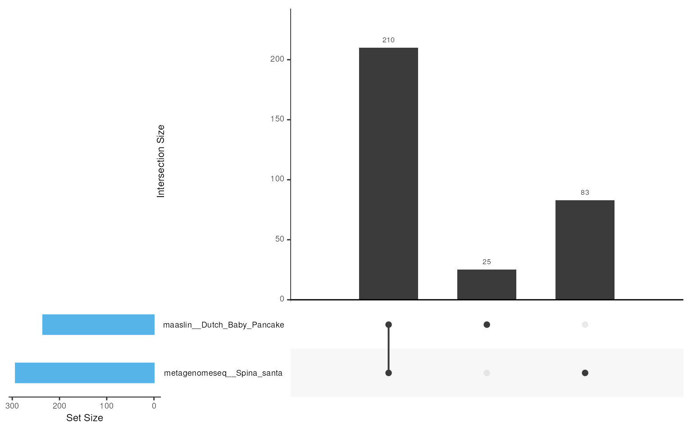
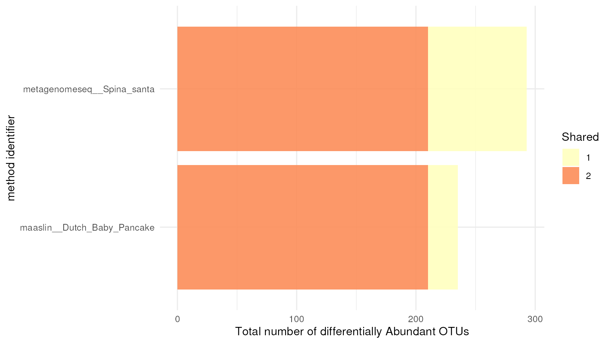
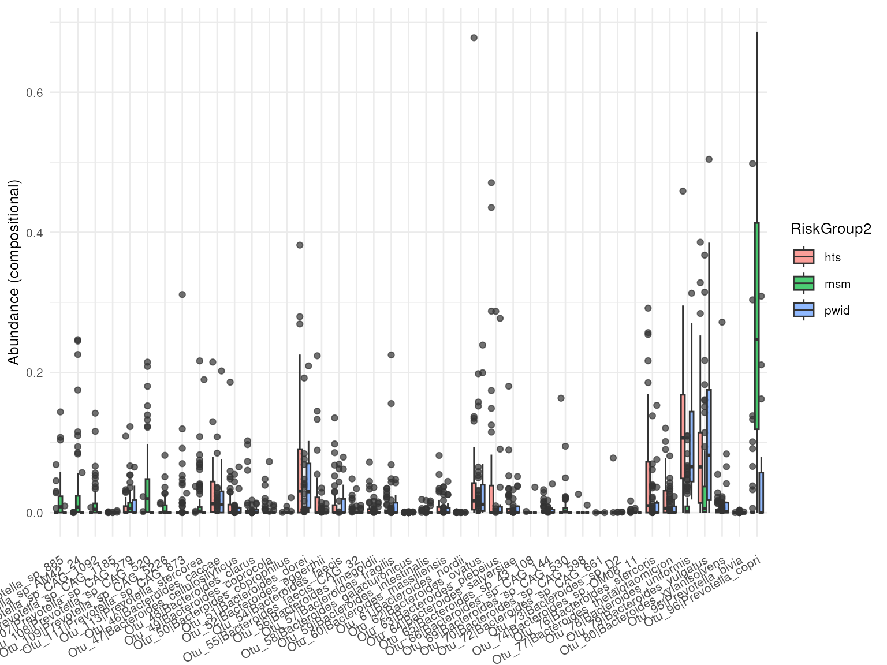

To illustrate the functionality of the ‘dar’ package, this study will use the data set from (Noguera-Julian, M., et al. 2016). The authors of this study found that men who have sex with men (MSM) predominantly belonged to the Prevotella-rich enterotype whereas most non-MSM subjects were enriched in Bacteroides, independently of HIV-1 status. This result highlights the potential impact of sexual orientation on the gut microbiome and emphasizes the importance of controlling for such variables in microbiome research. Using the ‘dar’ package, we will conduct a differential abundance analysis to further explore this finding and uncover potential microbial biomarkers associated with this specific population.
Load dar package and data
library(dar)
suppressPackageStartupMessages(library(plotly))
data("metaHIV_phy")
metaHIV_phy
#> phyloseq-class experiment-level object
#> otu_table() OTU Table: [ 451 taxa and 156 samples ]
#> sample_data() Sample Data: [ 156 samples by 3 sample variables ]
#> tax_table() Taxonomy Table: [ 451 taxa by 7 taxonomic ranks ]Recipe initialization
To begin the analysis process with the ‘dar’ package, the first step is to initialize a recipe object, which is an S4 class. This recipe object serves as a blueprint for the data preparation steps required for the differential abundan ce analysis. The initialization of the recipe object is done through the function recipe(), which takes as inputs a phyloseq object, the name of the categorical variable of interest and the taxonomic level at which the differential abundance analyses are to be performed. As previously mentioned, we will use the data set from (Noguera-Julian, M., et al. 2016) and the variable of interest “RiskGroup2” containing the categories: men who have sex with men (msm), non-MSM (hts) and people who inject drugs (pwid) and we will perform the analysis at the species level.
## Recipe initialization
rec <- recipe(metaHIV_phy, var_info = "RiskGroup2", tax_info = "Species")
rec
#> ── DAR Recipe ──────────────────────────────────────────────────────────────────
#> Inputs:
#>
#> ℹ phyloseq object with 451 taxa and 156 samples
#> ℹ variable of interes RiskGroup2 (class: character, levels: hts, msm, pwid)
#> ℹ taxonomic level SpeciesRecipe QC and preprocessing steps definition
Once the recipe object has been initialized, the next step is to populate it with steps. Steps are the methods that will be applied to the data stored in the recipe. There are two types of steps: preprocessing (prepro) and differential abundance (da) steps. Initially, we will focus on the prepro steps which are used to modify the data loaded into the recipe, which will then be used for the da steps. The ‘dar’ package includes 3 main preprocessing functionalities: step_subset_taxa, which is used for subsetting columns and values in the taxon table connected to the phyloseq object, step_filter_taxa, which is used to filter the OTUs, and step_rarefaction, which is used to resample the OTU table to ensure that all samples have the same library size. These functionalities allow for a high level of flexibility and customization in the data preparation process before performing the differential abundance analysis.
In addition to the preprocessing steps, the ‘dar’ package also incorporates the function phy_qc() which returns a table with a set of metrics that allow for informed decisions to be made about the data preprocessing that will be done. In our case, we decided to use the step_subset_taxa function to retain only those observations annotated within the realm of bacteria and archaea. We also used the step_filter_taxa function to retain only those OTUs with at least 1% of the samples with values greater than 0. This approach ensured that we were working with a high-quality, informative subset of the data, which improved the overall accuracy and reliability of the differential abundance analysis.
## QC
phy_qc(rec)
#> # A tibble: 4 × 10
#> var_lev…¹ n n_zero pct_z…² pct_a…³ pct_s…⁴ pct_d…⁵ count…⁶ count…⁷ count…⁸
#> <chr> <int> <int> <dbl> <dbl> <dbl> <dbl> <dbl> <dbl> <dbl>
#> 1 all 70356 57632 81.9 0 20.6 8.87 23805. 0 3.34e6
#> 2 hts 18491 15108 81.7 24.2 22.8 8.43 36017. 0 4.52e6
#> 3 msm 45100 37019 82.1 16.0 20.2 9.53 17104. 0 2.74e6
#> 4 pwid 6765 5505 81.4 41.2 16.6 9.31 35097. 0 4.13e6
#> # … with abbreviated variable names ¹var_levels, ²pct_zero, ³pct_all_zero,
#> # ⁴pct_singletons, ⁵pct_doubletons, ⁶count_mean, ⁷count_min, ⁸count_max
## Adding prepro steps
rec <-
rec %>%
step_subset_taxa(expr = 'Kingdom %in% c("Bacteria", "Archaea")') %>%
step_filter_taxa(.f = "function(x) sum(x > 0) >= (0.1 * length(x))")
rec
#> ── DAR Recipe ──────────────────────────────────────────────────────────────────
#> Inputs:
#>
#> ℹ phyloseq object with 451 taxa and 156 samples
#> ℹ variable of interes RiskGroup2 (class: character, levels: hts, msm, pwid)
#> ℹ taxonomic level Species
#>
#> Preporcessing steps:
#>
#> ◉ step_subset_taxa() id = subset_taxa__Cherry_pie
#> ◉ step_filter_taxa() id = filter_taxa__Briouat
#>
#> DA steps:Define Differential Analysis (DA) steps
Once data is preprocessed and cleaned, the next step is to add the da steps. The ‘dar’ package incorporates multiple methods to analyze the data, including: ALDEx2, ANCOM-BC, corncob, DESeq2, Lefse, MAaslin2, MetagenomeSeq, and Wilcox. These methods provide a range of options for uncovering potential microbial biomarkers associated with the variable of interest. To ensure consistency across methods, we decided not to use default parameters, but to set the min_prevalence parameter to 0 for MAaslin2, and the rm_zeros parameter to 0.01 for MetagenomeSeq, since it was observed that the pct_all_zeros value was not equal to 0 in some levels of the categorical variable in the results of phy_qc(). This approach ensured that the analysis was consistent across all methods and that the results were interpretable.
## DA steps definition
rec <- rec %>%
step_ancom() %>%
step_aldex() %>%
step_deseq() %>%
step_corncob(filter_discriminant = FALSE) %>%
step_metagenomeseq(rm_zeros = 0.01) %>%
step_maaslin(min_prevalence = 0) %>%
step_lefse() %>%
step_wilcox()
rec
#> ── DAR Recipe ──────────────────────────────────────────────────────────────────
#> Inputs:
#>
#> ℹ phyloseq object with 451 taxa and 156 samples
#> ℹ variable of interes RiskGroup2 (class: character, levels: hts, msm, pwid)
#> ℹ taxonomic level Species
#>
#> Preporcessing steps:
#>
#> ◉ step_subset_taxa() id = subset_taxa__Cherry_pie
#> ◉ step_filter_taxa() id = filter_taxa__Briouat
#>
#> DA steps:
#>
#> ◉ step_ancom() id = ancom__Roti_john
#> ◉ step_aldex() id = aldex__Eccles_cake
#> ◉ step_deseq() id = deseq__Öçpoçmaq
#> ◉ step_corncob() id = corncob__Paste
#> ◉ step_metagenomeseq() id = metagenomeseq__Pain_aux_raisins
#> ◉ step_maaslin() id = maaslin__Nazook
#> ◉ step_lefse() id = lefse__Filo
#> ◉ step_wilcox() id = wilcox__Cannoli_sicilianiPrep recipe
Once the recipe has been defined, the next step is to execute all the steps defined in the recipe. This is done through the function prep(). Internally, it first executes the preprocessing steps, which modify the phyloseq object stored in the recipe. Then, using the modified phyloseq, it executes each of the defined differential abundance methods. To speed up the execution time, the prep() function includes the option to run in parallel. The resulting object has class ‘prep_recipe’ and when printed in the terminal, it displays the number of taxa detected as significant in each of the methods and also the total number of taxa shared across all methods. This allows for a provisional overview of the results and a comparison between methods.
## Execute in parallel
da_results <- prep(rec, parallel = FALSE)
#> Warning: There was 1 warning in `dplyr::mutate()`.
#> ℹ In argument: `dplyr::across(...)`.
#> Caused by warning:
#> ! Using `across()` without supplying `.cols` was deprecated in dplyr 1.1.0.
#> ℹ Please supply `.cols` instead.
da_results
#> ── DAR Results ─────────────────────────────────────────────────────────────────
#> Inputs:
#>
#> ℹ phyloseq object with 174 taxa and 156 samples
#> ℹ variable of interes RiskGroup2 (class: character, levels: hts, msm, pwid)
#> ℹ taxonomic level Species
#>
#> Results:
#>
#> ✔ ancom__Roti_john diff_taxa = 63
#> ✔ aldex__Eccles_cake diff_taxa = 112
#> ✔ deseq__Öçpoçmaq diff_taxa = 92
#> ✔ corncob__Paste diff_taxa = 125
#> ✔ metagenomeseq__Pain_aux_raisins diff_taxa = 136
#> ✔ maaslin__Nazook diff_taxa = 148
#> ✔ lefse__Filo diff_taxa = 121
#> ✔ wilcox__Cannoli_siciliani diff_taxa = 123
#>
#> ℹ 26 taxa are present in all tested methodsDefault results extraction
At this point, we could extract the taxa shared across all methods using the function bake() to define a default consensus strategy and then cool() to extract the results.
## Default DA taxa results
results <-
bake(da_results) %>%
cool()
results
#> # A tibble: 26 × 2
#> taxa_id taxa
#> <chr> <chr>
#> 1 Otu_44 Gordonibacter_pamelaeae
#> 2 Otu_45 Slackia_isoflavoniconvertens
#> 3 Otu_48 Bacteroides_clarus
#> 4 Otu_63 Bacteroides_plebeius
#> 5 Otu_69 Bacteroides_sp_CAG_530
#> 6 Otu_78 Bacteroides_uniformis
#> 7 Otu_82 Barnesiella_intestinihominis
#> 8 Otu_88 Odoribacter_splanchnicus
#> 9 Otu_96 Prevotella_copri
#> 10 Otu_101 Prevotella_sp_885
#> # … with 16 more rowsHowever, ‘dar’ allows for complex consensus strategies based on the obtained results. To that end, the user has access to different functions to graphically represent different types of information. This feature allows for a more in-depth analysis of the results and a better understanding of the underlying patterns in the data.
Exploration for consensus strategie definition
For example, intersection_plt() gives an overview of the overlaps between methods by creating an upSet plot. In our case, this function has shown that 25 taxa are shared across all the methods used. However, by changing the consensus strategy and using a lower count_cutoff value, we can see that the number of shared taxa increases from 25 to 80.
## Intersection plot
intersection_plt(da_results, ordered_by = "degree", font_size = 1)
In addition to the intersection_plt() function, ‘dar’ also has the function exclusion_plt() which provides information about the number of OTUs shared between methods. This function allows to identify the OTUs that are specific to each method and also the ones that are not shared among any method.
## Exclusion plot
exclusion_plt(da_results)
Besides to the previously mentioned functions, ‘dar’ also includes the function corr_heatmap(), which allows for visualization of the overlap of significant OTUs between tested methods. This function can provide similar information to the previous plots, but in some cases it may be easier to interpret. Using this function with our data set, we can observe that although most of the tested methods return similar results, DESeq2 and ANCOM have a lower correlation with the other methods. This result can also be observed in the plot generated by the intersection_plt() function, providing a more comprehensive view of the results.
## Correlation heatmap
corr_heat <- corr_heatmap(da_results, font_size = 10)
#> Warning: Using one column matrices in `filter()` was deprecated in dplyr 1.1.0.
#> ℹ Please use one dimensional logical vectors instead.
#> ℹ The deprecated feature was likely used in the dplyr package.
#> Please report the issue at <https://github.com/tidyverse/dplyr/issues>.
corr_heatFinally, ‘dar’ also includes the function mutual_plt(), which plots the number of differential abundant features mutually found by a defined number of methods, colored by the differential abundance direction and separated by comparison. The resulting graph allows us to see that the features detected correspond mainly to the comparisons between hts vs msm and msm vs pwid. Additionally, the graph also allows us to observe the direction of the effect; whether a specific OTU is enriched or depleted for each comparison.
## Mutual plot
mutual_plt(da_results, count_cutoff = length(steps_ids(da_results, type = "da")))
Define a consesus strategy using bake
After visually inspecting the results from running all the differential analysis methods on our data, we have the necessary information to define a consensus strategy that fits our dataset. In our case, since DESeq2 returns results that are quite different from the other methods, we will exclude the results obtained by this method and keep only the differentially abundant features that are present in all of the other 7 methods.
Additionally, the bake() function allows to further refine the consensus strategy through its parameters, such as count_cutoff, which indicates the minimum number of methods in which an OTU must be present, and weights, a named vector with the ponderation value for each method. However, for simplicity, these parameters are not used in this example.
## Extract id for deseq step
to_exclude <-
steps_ids(da_results, type = "da") %>%
.[stringr::str_detect(., "deseq")]
## Define consensus strategy
da_results <- bake(da_results, exclude = to_exclude, )
da_results
#> ── DAR Results ─────────────────────────────────────────────────────────────────
#> Inputs:
#>
#> ℹ phyloseq object with 174 taxa and 156 samples
#> ℹ variable of interes RiskGroup2 (class: character, levels: hts, msm, pwid)
#> ℹ taxonomic level Species
#>
#> Results:
#>
#> ✔ ancom__Roti_john diff_taxa = 63
#> ✔ aldex__Eccles_cake diff_taxa = 112
#> ✔ deseq__Öçpoçmaq diff_taxa = 92
#> ✔ corncob__Paste diff_taxa = 125
#> ✔ metagenomeseq__Pain_aux_raisins diff_taxa = 136
#> ✔ maaslin__Nazook diff_taxa = 148
#> ✔ lefse__Filo diff_taxa = 121
#> ✔ wilcox__Cannoli_siciliani diff_taxa = 123
#>
#> ℹ 26 taxa are present in all tested methods
#>
#> Bakes:
#>
#> ◉ 1 -> count_cutoff: NULL, weights: NULL, exclude: deseq__Öçpoçmaq, id: bake__Cherry_pieExtract results
To conclude, we can extract the final results using the cool() function. This function takes a prep-recipe object and the ID of the bake to be used as input (by default it is 1, but if you have multiple consensus strategies, you can change it to extract the desired results).
## Extract results for bake id 1
f_results <- cool(da_results, bake = 1)
f_results
#> # A tibble: 81 × 2
#> taxa_id taxa
#> <chr> <chr>
#> 1 Otu_13 Bifidobacterium_bifidum
#> 2 Otu_19 Bifidobacterium_pseudocatenulatum
#> 3 Otu_40 Adlercreutzia_equolifaciens
#> 4 Otu_41 Asaccharobacter_celatus
#> 5 Otu_42 Eggerthella_lenta
#> 6 Otu_44 Gordonibacter_pamelaeae
#> 7 Otu_45 Slackia_isoflavoniconvertens
#> 8 Otu_46 Bacteroides_caccae
#> 9 Otu_47 Bacteroides_cellulosilyticus
#> 10 Otu_48 Bacteroides_clarus
#> # … with 71 more rowsTo further visualize the results, the abundance_plt() function can be utilized to visualize the differences in abundance of the differential abundant taxa.
## Ids for Bacteroide and Provotella species
ids <-
f_results %>%
dplyr::filter(stringr::str_detect(taxa, "Bacteroi.*|Prevote.*")) %>%
dplyr::pull(taxa_id)
## Abundance plot as boxplot
abundance_plt(da_results, taxa_ids = ids, type = "boxplot") 
Session info
devtools::session_info()
#> ─ Session info ───────────────────────────────────────────────────────────────
#> setting value
#> version R version 4.2.2 (2022-10-31)
#> os Ubuntu 22.04.1 LTS
#> system x86_64, linux-gnu
#> ui X11
#> language en
#> collate C.UTF-8
#> ctype C.UTF-8
#> tz UTC
#> date 2023-01-31
#> pandoc 2.19.2 @ /usr/bin/ (via rmarkdown)
#>
#> ─ Packages ───────────────────────────────────────────────────────────────────
#> package * version date (UTC) lib source
#> abind 1.4-5 2016-07-21 [1] CRAN (R 4.2.2)
#> ade4 1.7-20 2022-11-01 [1] CRAN (R 4.2.2)
#> ALDEx2 1.30.0 2022-11-01 [1] Bioconductor
#> ANCOMBC 2.0.2 2022-12-18 [1] Bioconductor
#> annotate 1.76.0 2022-11-01 [1] Bioconductor
#> AnnotationDbi 1.60.0 2022-11-01 [1] Bioconductor
#> ape 5.6-2 2022-03-02 [1] CRAN (R 4.2.2)
#> ashr 2.2-54 2022-02-22 [1] CRAN (R 4.2.2)
#> assertthat 0.2.1 2019-03-21 [1] CRAN (R 4.2.2)
#> backports 1.4.1 2021-12-13 [1] CRAN (R 4.2.2)
#> base64enc 0.1-3 2015-07-28 [1] CRAN (R 4.2.2)
#> beachmat 2.14.0 2022-11-01 [1] Bioconductor
#> beeswarm 0.4.0 2021-06-01 [1] CRAN (R 4.2.2)
#> biglm 0.9-2.1 2020-11-27 [1] CRAN (R 4.2.2)
#> Biobase 2.58.0 2022-11-01 [1] Bioconductor
#> BiocGenerics 0.44.0 2022-11-01 [1] Bioconductor
#> BiocNeighbors 1.16.0 2022-11-01 [1] Bioconductor
#> BiocParallel 1.32.5 2022-12-23 [1] Bioconductor
#> BiocSingular 1.14.0 2022-11-01 [1] Bioconductor
#> biomformat 1.26.0 2022-11-01 [1] Bioconductor
#> Biostrings 2.66.0 2022-11-01 [1] Bioconductor
#> bit 4.0.5 2022-11-15 [1] CRAN (R 4.2.2)
#> bit64 4.0.5 2020-08-30 [1] CRAN (R 4.2.2)
#> bitops 1.0-7 2021-04-24 [1] CRAN (R 4.2.2)
#> blob 1.2.3 2022-04-10 [1] CRAN (R 4.2.2)
#> boot 1.3-28 2021-05-03 [3] CRAN (R 4.2.2)
#> brio 1.1.3 2021-11-30 [1] CRAN (R 4.2.2)
#> broom 1.0.3 2023-01-25 [1] CRAN (R 4.2.2)
#> bslib 0.4.2 2022-12-16 [1] CRAN (R 4.2.2)
#> ca 0.71.1 2020-01-24 [1] CRAN (R 4.2.2)
#> cachem 1.0.6 2021-08-19 [1] CRAN (R 4.2.2)
#> callr 3.7.3 2022-11-02 [1] CRAN (R 4.2.2)
#> car 3.1-1 2022-10-19 [1] CRAN (R 4.2.2)
#> carData 3.0-5 2022-01-06 [1] CRAN (R 4.2.2)
#> caTools 1.18.2 2021-03-28 [1] CRAN (R 4.2.2)
#> cellranger 1.1.0 2016-07-27 [1] CRAN (R 4.2.2)
#> checkmate 2.1.0 2022-04-21 [1] CRAN (R 4.2.2)
#> class 7.3-20 2022-01-16 [3] CRAN (R 4.2.2)
#> cli 3.6.0 2023-01-09 [1] CRAN (R 4.2.2)
#> cluster 2.1.4 2022-08-22 [3] CRAN (R 4.2.2)
#> coda 0.19-4 2020-09-30 [1] CRAN (R 4.2.2)
#> codetools 0.2-18 2020-11-04 [3] CRAN (R 4.2.2)
#> coin 1.4-2 2021-10-08 [1] CRAN (R 4.2.2)
#> colorspace 2.1-0 2023-01-23 [1] CRAN (R 4.2.2)
#> corncob 0.3.1 2022-12-05 [1] CRAN (R 4.2.2)
#> crayon 1.5.2 2022-09-29 [1] CRAN (R 4.2.2)
#> crosstalk 1.2.0 2021-11-04 [1] CRAN (R 4.2.2)
#> CVXR 1.0-11 2022-10-30 [1] CRAN (R 4.2.2)
#> dar * 0.99.0 2023-01-31 [1] local
#> data.table 1.14.6 2022-11-16 [1] CRAN (R 4.2.2)
#> DBI 1.1.3 2022-06-18 [1] CRAN (R 4.2.2)
#> DECIPHER 2.26.0 2022-11-01 [1] Bioconductor
#> decontam 1.18.0 2022-11-01 [1] Bioconductor
#> DelayedArray 0.24.0 2022-11-01 [1] Bioconductor
#> DelayedMatrixStats 1.20.0 2022-11-01 [1] Bioconductor
#> deldir 1.0-6 2021-10-23 [1] CRAN (R 4.2.2)
#> dendextend 1.16.0 2022-07-04 [1] CRAN (R 4.2.2)
#> DEoptimR 1.0-11 2022-04-03 [1] CRAN (R 4.2.2)
#> desc 1.4.2 2022-09-08 [1] CRAN (R 4.2.2)
#> DescTools 0.99.47 2022-10-22 [1] CRAN (R 4.2.2)
#> DESeq2 1.38.3 2023-01-19 [1] Bioconductor
#> detectseparation 0.3 2022-08-26 [1] CRAN (R 4.2.2)
#> devtools 2.4.5 2022-10-11 [1] CRAN (R 4.2.2)
#> digest 0.6.31 2022-12-11 [1] CRAN (R 4.2.2)
#> DirichletMultinomial 1.40.0 2022-11-01 [1] Bioconductor
#> doParallel 1.0.17 2022-02-07 [1] CRAN (R 4.2.2)
#> doRNG 1.8.6 2023-01-16 [1] CRAN (R 4.2.2)
#> dplyr 1.1.0 2023-01-29 [1] CRAN (R 4.2.2)
#> e1071 1.7-12 2022-10-24 [1] CRAN (R 4.2.2)
#> ellipsis 0.3.2 2021-04-29 [1] CRAN (R 4.2.2)
#> emmeans 1.8.4-1 2023-01-17 [1] CRAN (R 4.2.2)
#> energy 1.7-11 2022-12-22 [1] CRAN (R 4.2.2)
#> estimability 1.4.1 2022-08-05 [1] CRAN (R 4.2.2)
#> evaluate 0.20 2023-01-17 [1] CRAN (R 4.2.2)
#> Exact 3.2 2022-09-25 [1] CRAN (R 4.2.2)
#> expm 0.999-7 2023-01-09 [1] CRAN (R 4.2.2)
#> fansi 1.0.4 2023-01-22 [1] CRAN (R 4.2.2)
#> farver 2.1.1 2022-07-06 [1] CRAN (R 4.2.2)
#> fastmap 1.1.0 2021-01-25 [1] CRAN (R 4.2.2)
#> foreach 1.5.2 2022-02-02 [1] CRAN (R 4.2.2)
#> foreign 0.8-83 2022-09-28 [3] CRAN (R 4.2.2)
#> Formula 1.2-4 2020-10-16 [1] CRAN (R 4.2.2)
#> fs 1.6.0 2023-01-23 [1] CRAN (R 4.2.2)
#> geneplotter 1.76.0 2022-11-01 [1] Bioconductor
#> generics 0.1.3 2022-07-05 [1] CRAN (R 4.2.2)
#> GenomeInfoDb 1.34.7 2023-01-24 [1] Bioconductor
#> GenomeInfoDbData 1.2.9 2023-01-31 [1] Bioconductor
#> GenomicRanges 1.50.2 2022-12-16 [1] Bioconductor
#> getopt 1.20.3 2019-03-22 [1] CRAN (R 4.2.2)
#> ggbeeswarm 0.7.1 2022-12-16 [1] CRAN (R 4.2.2)
#> ggplot2 * 3.4.0 2022-11-04 [1] CRAN (R 4.2.2)
#> ggrepel 0.9.2 2022-11-06 [1] CRAN (R 4.2.2)
#> gld 2.6.6 2022-10-23 [1] CRAN (R 4.2.2)
#> glmnet 4.1-6 2022-11-27 [1] CRAN (R 4.2.2)
#> glue 1.6.2 2022-02-24 [1] CRAN (R 4.2.2)
#> gmp 0.6-10 2023-01-17 [1] CRAN (R 4.2.2)
#> gplots 3.1.3 2022-04-25 [1] CRAN (R 4.2.2)
#> gridExtra 2.3 2017-09-09 [1] CRAN (R 4.2.2)
#> gsl 2.1-8 2023-01-24 [1] CRAN (R 4.2.2)
#> gtable 0.3.1 2022-09-01 [1] CRAN (R 4.2.2)
#> gtools 3.9.4 2022-11-27 [1] CRAN (R 4.2.2)
#> hash 2.2.6.2 2022-03-22 [1] CRAN (R 4.2.2)
#> heatmaply 1.4.2 2023-01-07 [1] CRAN (R 4.2.2)
#> highr 0.10 2022-12-22 [1] CRAN (R 4.2.2)
#> Hmisc 4.7-2 2022-11-18 [1] CRAN (R 4.2.2)
#> htmlTable 2.4.1 2022-07-07 [1] CRAN (R 4.2.2)
#> htmltools 0.5.4 2022-12-07 [1] CRAN (R 4.2.2)
#> htmlwidgets 1.6.1 2023-01-07 [1] CRAN (R 4.2.2)
#> httpuv 1.6.8 2023-01-12 [1] CRAN (R 4.2.2)
#> httr 1.4.4 2022-08-17 [1] CRAN (R 4.2.2)
#> igraph 1.3.5 2022-09-22 [1] CRAN (R 4.2.2)
#> interp 1.1-3 2022-07-13 [1] CRAN (R 4.2.2)
#> invgamma 1.1 2017-05-07 [1] CRAN (R 4.2.2)
#> IRanges 2.32.0 2022-11-01 [1] Bioconductor
#> irlba 2.3.5.1 2022-10-03 [1] CRAN (R 4.2.2)
#> iterators 1.0.14 2022-02-05 [1] CRAN (R 4.2.2)
#> jpeg 0.1-10 2022-11-29 [1] CRAN (R 4.2.2)
#> jquerylib 0.1.4 2021-04-26 [1] CRAN (R 4.2.2)
#> jsonlite 1.8.4 2022-12-06 [1] CRAN (R 4.2.2)
#> KEGGREST 1.38.0 2022-11-01 [1] Bioconductor
#> KernSmooth 2.23-20 2021-05-03 [3] CRAN (R 4.2.2)
#> knitr 1.42 2023-01-25 [1] CRAN (R 4.2.2)
#> labeling 0.4.2 2020-10-20 [1] CRAN (R 4.2.2)
#> later 1.3.0 2021-08-18 [1] CRAN (R 4.2.2)
#> lattice 0.20-45 2021-09-22 [3] CRAN (R 4.2.2)
#> latticeExtra 0.6-30 2022-07-04 [1] CRAN (R 4.2.2)
#> lazyeval 0.2.2 2019-03-15 [1] CRAN (R 4.2.2)
#> lefser 1.8.0 2022-11-01 [1] Bioconductor
#> libcoin 1.0-9 2021-09-27 [1] CRAN (R 4.2.2)
#> lifecycle 1.0.3 2022-10-07 [1] CRAN (R 4.2.2)
#> limma 3.54.1 2023-01-26 [1] Bioconductor
#> lme4 1.1-31 2022-11-01 [1] CRAN (R 4.2.2)
#> lmerTest 3.1-3 2020-10-23 [1] CRAN (R 4.2.2)
#> lmom 2.9 2022-05-29 [1] CRAN (R 4.2.2)
#> locfit 1.5-9.7 2023-01-02 [1] CRAN (R 4.2.2)
#> logging 0.10-108 2019-07-14 [1] CRAN (R 4.2.2)
#> lpSolveAPI 5.5.2.0-17.9 2022-10-20 [1] CRAN (R 4.2.2)
#> lpsymphony 1.26.3 2023-01-19 [1] Bioconduc~
#> Maaslin2 1.12.0 2022-11-01 [1] Bioconductor
#> magrittr 2.0.3 2022-03-30 [1] CRAN (R 4.2.2)
#> MASS 7.3-58.1 2022-08-03 [3] CRAN (R 4.2.2)
#> Matrix 1.5-1 2022-09-13 [3] CRAN (R 4.2.2)
#> MatrixGenerics 1.10.0 2022-11-01 [1] Bioconductor
#> matrixStats 0.63.0 2022-11-18 [1] CRAN (R 4.2.2)
#> memoise 2.0.1 2021-11-26 [1] CRAN (R 4.2.2)
#> metagenomeSeq 1.40.0 2022-11-01 [1] Bioconductor
#> mgcv 1.8-41 2022-10-21 [3] CRAN (R 4.2.2)
#> mia 1.6.0 2022-11-01 [1] Bioconductor
#> microbiome 1.20.0 2022-11-01 [1] Bioconductor
#> mime 0.12 2021-09-28 [1] CRAN (R 4.2.2)
#> miniUI 0.1.1.1 2018-05-18 [1] CRAN (R 4.2.2)
#> minqa 1.2.5 2022-10-19 [1] CRAN (R 4.2.2)
#> mixsqp 0.3-48 2022-11-16 [1] CRAN (R 4.2.2)
#> modeltools 0.2-23 2020-03-05 [1] CRAN (R 4.2.2)
#> multcomp 1.4-20 2022-08-07 [1] CRAN (R 4.2.2)
#> MultiAssayExperiment 1.24.0 2022-11-01 [1] Bioconductor
#> multtest 2.54.0 2022-11-01 [1] Bioconductor
#> munsell 0.5.0 2018-06-12 [1] CRAN (R 4.2.2)
#> mvtnorm 1.1-3 2021-10-08 [1] CRAN (R 4.2.2)
#> NADA 1.6-1.1 2020-03-22 [1] CRAN (R 4.2.2)
#> nlme 3.1-160 2022-10-10 [3] CRAN (R 4.2.2)
#> nloptr 2.0.3 2022-05-26 [1] CRAN (R 4.2.2)
#> nnet 7.3-18 2022-09-28 [3] CRAN (R 4.2.2)
#> numDeriv 2016.8-1.1 2019-06-06 [1] CRAN (R 4.2.2)
#> optparse 1.7.3 2022-07-20 [1] CRAN (R 4.2.2)
#> pbapply 1.7-0 2023-01-13 [1] CRAN (R 4.2.2)
#> pcaPP 2.0-3 2022-10-24 [1] CRAN (R 4.2.2)
#> permute 0.9-7 2022-01-27 [1] CRAN (R 4.2.2)
#> phyloseq 1.42.0 2022-11-01 [1] Bioconductor
#> pillar 1.8.1 2022-08-19 [1] CRAN (R 4.2.2)
#> pkgbuild 1.4.0 2022-11-27 [1] CRAN (R 4.2.2)
#> pkgconfig 2.0.3 2019-09-22 [1] CRAN (R 4.2.2)
#> pkgdown 2.0.7 2022-12-14 [1] any (@2.0.7)
#> pkgload 1.3.2 2022-11-16 [1] CRAN (R 4.2.2)
#> plotly * 4.10.1 2022-11-07 [1] CRAN (R 4.2.2)
#> plyr 1.8.8 2022-11-11 [1] CRAN (R 4.2.2)
#> png 0.1-8 2022-11-29 [1] CRAN (R 4.2.2)
#> prettyunits 1.1.1 2020-01-24 [1] CRAN (R 4.2.2)
#> processx 3.8.0 2022-10-26 [1] CRAN (R 4.2.2)
#> profvis 0.3.7 2020-11-02 [1] CRAN (R 4.2.2)
#> promises 1.2.0.1 2021-02-11 [1] CRAN (R 4.2.2)
#> proxy 0.4-27 2022-06-09 [1] CRAN (R 4.2.2)
#> ps 1.7.2 2022-10-26 [1] CRAN (R 4.2.2)
#> purrr 1.0.1 2023-01-10 [1] CRAN (R 4.2.2)
#> R6 2.5.1 2021-08-19 [1] CRAN (R 4.2.2)
#> ragg 1.2.5 2023-01-12 [1] CRAN (R 4.2.2)
#> rbibutils 2.2.13 2023-01-13 [1] CRAN (R 4.2.2)
#> RColorBrewer 1.1-3 2022-04-03 [1] CRAN (R 4.2.2)
#> Rcpp 1.0.10 2023-01-22 [1] CRAN (R 4.2.2)
#> RcppZiggurat 0.1.6 2020-10-20 [1] CRAN (R 4.2.2)
#> RCurl 1.98-1.10 2023-01-27 [1] CRAN (R 4.2.2)
#> Rdpack 2.4 2022-07-20 [1] CRAN (R 4.2.2)
#> readxl 1.4.1 2022-08-17 [1] CRAN (R 4.2.2)
#> registry 0.5-1 2019-03-05 [1] CRAN (R 4.2.2)
#> remotes 2.4.2 2021-11-30 [1] CRAN (R 4.2.2)
#> reshape2 1.4.4 2020-04-09 [1] CRAN (R 4.2.2)
#> Rfast 2.0.6 2022-02-16 [1] CRAN (R 4.2.2)
#> rhdf5 2.42.0 2022-11-01 [1] Bioconductor
#> rhdf5filters 1.10.0 2022-11-01 [1] Bioconductor
#> Rhdf5lib 1.20.0 2022-11-01 [1] Bioconductor
#> rlang 1.0.6 2022-09-24 [1] CRAN (R 4.2.2)
#> rmarkdown 2.20 2023-01-19 [1] CRAN (R 4.2.2)
#> Rmpfr 0.9-0 2023-01-16 [1] CRAN (R 4.2.2)
#> rngtools 1.5.2 2021-09-20 [1] CRAN (R 4.2.2)
#> robustbase 0.95-0 2022-04-02 [1] CRAN (R 4.2.2)
#> ROI 1.0-0 2020-08-31 [1] CRAN (R 4.2.2)
#> ROI.plugin.lpsolve 1.0-1 2021-06-15 [1] CRAN (R 4.2.2)
#> rootSolve 1.8.2.3 2021-09-29 [1] CRAN (R 4.2.2)
#> rpart 4.1.19 2022-10-21 [3] CRAN (R 4.2.2)
#> rprojroot 2.0.3 2022-04-02 [1] CRAN (R 4.2.2)
#> RSQLite 2.2.20 2022-12-22 [1] CRAN (R 4.2.2)
#> rstatix 0.7.1 2022-11-09 [1] CRAN (R 4.2.2)
#> rstudioapi 0.14 2022-08-22 [1] CRAN (R 4.2.2)
#> rsvd 1.0.5 2021-04-16 [1] CRAN (R 4.2.2)
#> Rtsne 0.16 2022-04-17 [1] CRAN (R 4.2.2)
#> S4Vectors 0.36.1 2022-12-05 [1] Bioconductor
#> sandwich 3.0-2 2022-06-15 [1] CRAN (R 4.2.2)
#> sass 0.4.5 2023-01-24 [1] CRAN (R 4.2.2)
#> ScaledMatrix 1.6.0 2022-11-01 [1] Bioconductor
#> scales 1.2.1 2022-08-20 [1] CRAN (R 4.2.2)
#> scater 1.26.1 2022-11-13 [1] Bioconductor
#> scuttle 1.8.4 2023-01-19 [1] Bioconductor
#> seriation 1.4.1 2023-01-07 [1] CRAN (R 4.2.2)
#> sessioninfo 1.2.2 2021-12-06 [1] CRAN (R 4.2.2)
#> shape 1.4.6 2021-05-19 [1] CRAN (R 4.2.2)
#> shiny 1.7.4 2022-12-15 [1] CRAN (R 4.2.2)
#> SingleCellExperiment 1.20.0 2022-11-01 [1] Bioconductor
#> slam 0.1-50 2022-01-08 [1] CRAN (R 4.2.2)
#> sparseMatrixStats 1.10.0 2022-11-01 [1] Bioconductor
#> SQUAREM 2021.1 2021-01-13 [1] CRAN (R 4.2.2)
#> stringi 1.7.12 2023-01-11 [1] CRAN (R 4.2.2)
#> stringr 1.5.0 2022-12-02 [1] CRAN (R 4.2.2)
#> SummarizedExperiment 1.28.0 2022-11-01 [1] Bioconductor
#> survival 3.4-0 2022-08-09 [3] CRAN (R 4.2.2)
#> systemfonts 1.0.4 2022-02-11 [1] CRAN (R 4.2.2)
#> testthat 3.1.6 2022-12-09 [1] CRAN (R 4.2.2)
#> textshaping 0.3.6 2021-10-13 [1] CRAN (R 4.2.2)
#> TH.data 1.1-1 2022-04-26 [1] CRAN (R 4.2.2)
#> tibble 3.1.8 2022-07-22 [1] CRAN (R 4.2.2)
#> tidyr 1.3.0 2023-01-24 [1] CRAN (R 4.2.2)
#> tidyselect 1.2.0 2022-10-10 [1] CRAN (R 4.2.2)
#> tidytree 0.4.2 2022-12-18 [1] CRAN (R 4.2.2)
#> treeio 1.22.0 2022-11-01 [1] Bioconductor
#> TreeSummarizedExperiment 2.6.0 2022-11-01 [1] Bioconductor
#> truncnorm 1.0-8 2018-02-27 [1] CRAN (R 4.2.2)
#> trust 0.1-8 2020-01-10 [1] CRAN (R 4.2.2)
#> TSP 1.2-2 2023-01-25 [1] CRAN (R 4.2.2)
#> UpSetR 1.4.0 2019-05-22 [1] CRAN (R 4.2.2)
#> urlchecker 1.0.1 2021-11-30 [1] CRAN (R 4.2.2)
#> usethis 2.1.6 2022-05-25 [1] CRAN (R 4.2.2)
#> utf8 1.2.2 2021-07-24 [1] CRAN (R 4.2.2)
#> vctrs 0.5.2 2023-01-23 [1] CRAN (R 4.2.2)
#> vegan 2.6-4 2022-10-11 [1] CRAN (R 4.2.2)
#> VGAM 1.1-7 2022-07-06 [1] CRAN (R 4.2.2)
#> vipor 0.4.5 2017-03-22 [1] CRAN (R 4.2.2)
#> viridis 0.6.2 2021-10-13 [1] CRAN (R 4.2.2)
#> viridisLite 0.4.1 2022-08-22 [1] CRAN (R 4.2.2)
#> webshot 0.5.4 2022-09-26 [1] CRAN (R 4.2.2)
#> withr 2.5.0 2022-03-03 [1] CRAN (R 4.2.2)
#> Wrench 1.16.0 2022-11-01 [1] Bioconductor
#> xfun 0.36 2022-12-21 [1] CRAN (R 4.2.2)
#> XML 3.99-0.13 2022-12-04 [1] CRAN (R 4.2.2)
#> xtable 1.8-4 2019-04-21 [1] CRAN (R 4.2.2)
#> XVector 0.38.0 2022-11-01 [1] Bioconductor
#> yaml 2.3.7 2023-01-23 [1] CRAN (R 4.2.2)
#> yulab.utils 0.0.6 2022-12-20 [1] CRAN (R 4.2.2)
#> zCompositions 1.4.0-1 2022-03-26 [1] CRAN (R 4.2.2)
#> zlibbioc 1.44.0 2022-11-01 [1] Bioconductor
#> zoo 1.8-11 2022-09-17 [1] CRAN (R 4.2.2)
#>
#> [1] /home/runner/work/_temp/Library
#> [2] /opt/R/4.2.2/lib/R/site-library
#> [3] /opt/R/4.2.2/lib/R/library
#>
#> ──────────────────────────────────────────────────────────────────────────────